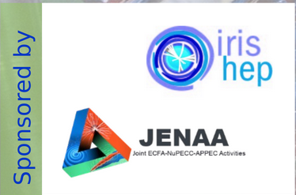

First MODE Workshop on Differentiable Programming for Experiment Design
Welcome to the reference page for the first workshop on Differentiable Programming for Experiment Design by the MODE Collaboration.
We envision that such a workshop, with minimally varied title and content, should become a yearly event where we invite scientists active in the research area at the focus of MODE to connect and discuss about their results and plans. For this first event the intent is also organizational, getting the interested parties to know each other and coalesce on focused efforts.
Details
When:
The workshop is confirmed to take place on September 6th--8th, 2021 with a hybrid form (in person and online). If you plan to attend in person, you can find in the indico page linked below all information to register and book your travel.
Where:
Auditorium Cyclotron 01, CP3, Université catholique de Louvain, Chemin du Cyclotron, 2, B1348 Louvain-la-Neuve, Belgium (
google maps)
Registrations are now open! You can register and find the full program with a list of speakers and practical information in this Indico page!!!
Sponsors
This workshop is sponsored by JENAA and by IRIS-HEP! We thank both organizations for their kind support!!!

Program
September 6th, afternoon:
- 14:00-14:25 Introduction and goals of the workshop (Tommaso Dorigo, INFN-PD)
- 14:25-16:30 Keynote session: differentiable programming and deep learning (chair: Pietro Vischia, UCLouvain)
- Opening lecture: Atilim Gunes Baydin (University of Oxford): Differentiable programming applications to design optimization
- Keynote lecture: Mikhail Belkin (Halıcıoğlu Data Science Institute, UCSD): Generalization properties of neural networks)
- Keynote lecture: Adam Paszke (Google Brain): Title TBA
- 16:30-17:00 break
- 17:00-19:00 Applications in muon tomography (chair: Andrea Giammanco, UCLouvain)
September 7th, morning:
- 08:30-11:00 Applications and requirements for particle physics (chair: Pietro Vischia, UCLouvain)
- 11:00-11:30 break
- 11:30-13:30 Applications and requirements in nuclear physics experiments (chair: Gian Michele Innocenti, CERN)
September 7th, afternoon
- 14:30-16:30 Applications and requirements in astro-HEP (chair: Roberto Ruiz de Austri Bazan, IFIC Valencia)
- 16:30-17:00 break
- 17:00-19:00 Applications and requirements for neutrino detectors (chair: Kazuhiro Terao, Columbia U.)
September 8th, morning
- 09:00-13:00 Brainstorming and specification of tasks and goals of the working groups
September 8th, afternoon
- 14:30-15:30 Progress in Computer Science Part 1 (chair: Atilim Gunes Baydin, U. Oxford)
- 15:30-16:00 break
- 16:00-17:00 Progress in Computer Science Part 2 (chair: Atilim Gunes Baydin, U. Oxford)
- 17:00-17:30 Organization of future activities and closing of the workshop (chair: Pietro Vischia, UCLouvain)
Organizing Committee
- Pietro Vischia (UCLouvain)
- Christophe Delaere (UCLouvain)
- Tommaso Dorigo (INFN-PD)
- Andrea Giammanco (UCLouvain)
- Giles Strong (INFN-PD)
- Carine Baras (secretariat) (UCLouvain)
- Carinne Mertens (secretariat) (UCLouvain)
Scientific Advisory Committee
- Kyle Cranmer (New York U., HEP/ML)
- Julien Donini (U. Clermont Auvergne, HEP)
- Andrea Giammanco (U. Cath. Louvain, HEP/Muon Tomography)
- Atilim Gunes Baydin (Oxford U., CS)
- Piero Giubilato (U. Padova, hadron therapy)
- Gian Michele Innocenti (CERN, nuclear physics/ML)
- Michael Kagan (SLAC, HEP/CS)
- Riccardo Rando (. Padova, astro-HEP)
- Roberto Ruiz de Austri Bazan (IFIC Valencia, astro-HEP)
- Kazuhiro Terao (Columbia U., neutrino/ML)
- Andrey Ustyuzhanin (Higher School of Economics, Nat. Res. Univ. Moscow, CS)
- Christoph Weniger (U. Amsterdam, astro-HEP)
Code of Conduct
We will abide by the IRIS-HEP code of conduct: complaints can be sent to any member of the MODE Workshop organizing committee